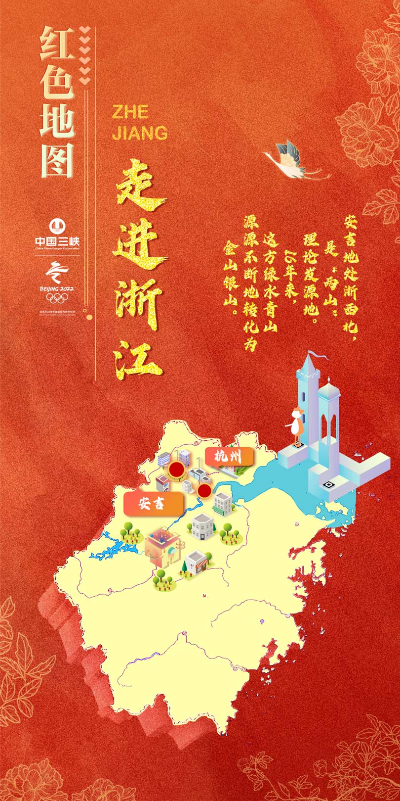
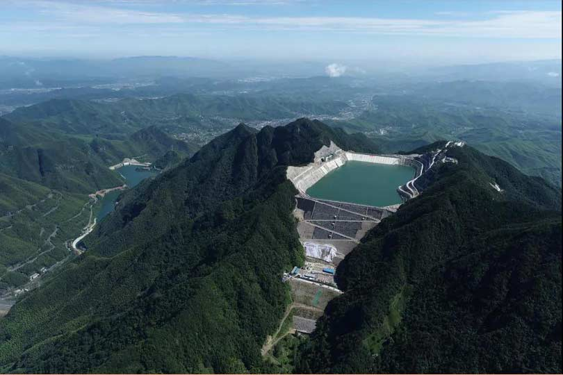
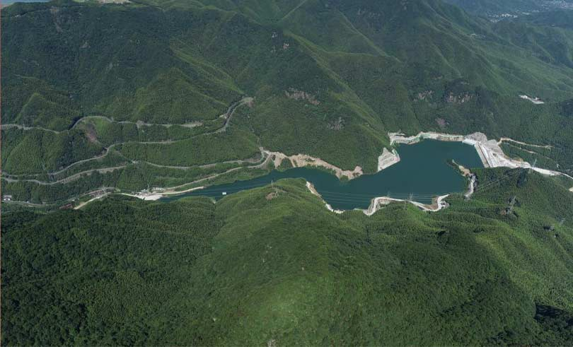
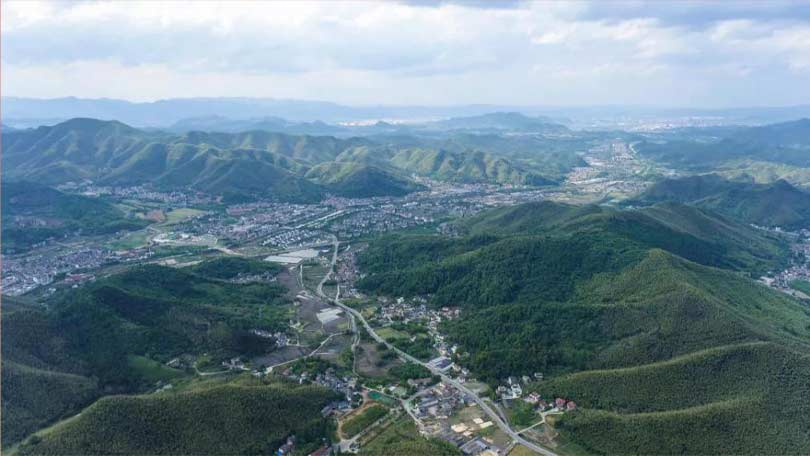

浙江，以“七山一水两分田”的地理环境，成为全国经济最为发达的省份之一。如何利用好山水资源，浙江人一直想在前、干在前。
2005年，时任浙江省委书记的习近平同志，在安吉县余村开创性地提出 “绿水青山就是金山银山” 理念。 16年来，安吉一直是坚定不移践行“两山”理念的典范。
长龙山抽水蓄能电站，就是三峡集团携手安吉，把绿水青山转化成金山银山的生动实践。

长龙山抽水蓄能电站上下水库全貌
摄影：崔徐波 毛翔春
长龙山电站工程于2015年11月开工建设，2021年6月底首台机组投产发电，预计2022年11月实现全部机组发电。电站安装6台发电机组，总装机容量为210万千瓦，年均发电量约24.3亿千瓦时，兼具调峰、填谷、事故备用、储能、黑启动等多种作用，作为华东电网优质的调节器、稳压器、平衡器，对于增强华东电网的调峰能力、保障电网安全稳定、助力长三角一体化发展都具有十分重要意义。
厚植“两山”理念沃土，长龙山电站建设始终坚持在保护中发展、在发展中保护。

长龙山抽水蓄能电站下水库
摄影：崔徐波 毛翔春
长龙山电站上、下水库高差700多米，直线距离2.5公里，上库借助两侧山体，筑坝成库，下库拦河而建，水源充足，依山就势，顺势而为，水通过山体里连接上下库的三条输水系统和主厂房发电机组循环流淌，绿水青山就转变成了金山银山。
从地面到地下，从山下到山顶，为了减少对植被的影响，设计规划了13条隧道，尽量采取隧道替代明线，有效保护了生态环境。
2013年6月，三峡能源在疆首个光伏项目——皮山一期20兆瓦光伏工程成功并网。同年，三峡能源在疆年发电量突破1亿千瓦时大关。

浙江安吉
安吉大地碧空万里。如今，长龙山抽水蓄能电站横卧在蓝天白云下，镶嵌在碧绿苍翠的群山之间，即将成为又一颗璀璨的东方明珠。（作者：崔徐波）
中国三峡出版传媒公司
出品
出品